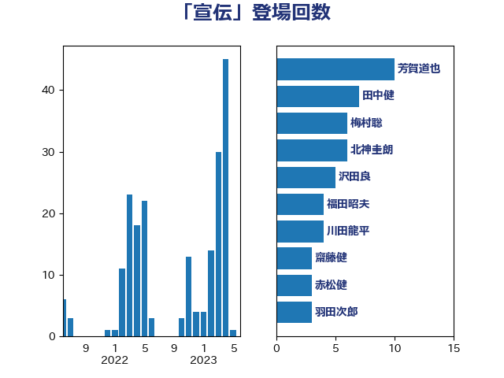

単語「宣伝」

| 芳賀道也 | 国民民主党 | 10 回 |
| 田中健 | 国民民主党 | 7 回 |
| 梅村聡 | 日本維新の会 | 6 回 |
| 北神圭朗 | 無所属 | 6 回 |
| 沢田良 | 日本維新の会 | 5 回 |
| 福田昭夫 | 立憲民主党 | 4 回 |
| 川田龍平 | 立憲民主党 | 4 回 |
| 齋藤健 | 自由民主党 | 3 回 |
| 赤松健 | 自由民主党 | 3 回 |
| 羽田次郎 | 立憲民主党 | 3 回 |
| 穀田恵二 | 日本共産党 | 3 回 |
| 大島九州男 | れいわ新選組 | 3 回 |
| 青山大人 | 立憲民主党 | 2 回 |
| 阿部知子 | 立憲民主党 | 2 回 |
| 西野太亮 | 自由民主党 | 2 回 |
| 舩後靖彦 | れいわ新選組 | 2 回 |
| 田村智子 | 日本共産党 | 2 回 |
| 田村まみ | 国民民主党 | 2 回 |
| 牧山ひろえ | 立憲民主党 | 2 回 |
| 梅谷守 | 立憲民主党 | 2 回 |
| 柚木道義 | 立憲民主党 | 2 回 |
| 岡本三成 | 公明党 | 2 回 |
| 山本太郎 | れいわ新選組 | 2 回 |
| 小沼巧 | 立憲民主党 | 2 回 |
| 小林茂樹 | 自由民主党 | 2 回 |
| 奥野総一郎 | 立憲民主党 | 2 回 |
| 大西健介 | 立憲民主党 | 2 回 |
| 和田有一朗 | 日本維新の会 | 2 回 |
| 吉田とも代 | 日本維新の会 | 2 回 |
| 佐藤啓 | 自由民主党 | 2 回 |
| 高橋千鶴子 | 日本共産党 | 1 回 |
| 高木かおり | 日本維新の会 | 1 回 |
| 須藤元気 | 無所属 | 1 回 |
| 音喜多駿 | 日本維新の会 | 1 回 |
| 長妻昭 | 立憲民主党 | 1 回 |
| 金村龍那 | 日本維新の会 | 1 回 |
| 重徳和彦 | 立憲民主党 | 1 回 |
| 足立康史 | 日本維新の会 | 1 回 |
| 谷田川元 | 立憲民主党 | 1 回 |
| 藤田文武 | 日本維新の会 | 1 回 |
| 藤岡隆雄 | 立憲民主党 | 1 回 |
| 萩生田光一 | 自由民主党 | 1 回 |
| 若林洋平 | 自由民主党 | 1 回 |
| 舟山康江 | 国民民主党 | 1 回 |
| 米山隆一 | 立憲民主党 | 1 回 |
| 穂坂泰 | 自由民主党 | 1 回 |
| 福島伸享 | 無所属 | 1 回 |
| 石橋通宏 | 立憲民主党 | 1 回 |
| 石川大我 | 立憲民主党 | 1 回 |
| 石垣のりこ | 立憲民主党 | 1 回 |
| 石原宏高 | 自由民主党 | 1 回 |
| 石井拓 | 自由民主党 | 1 回 |
| 田名部匡代 | 立憲民主党 | 1 回 |
| 漆間譲司 | 日本維新の会 | 1 回 |
| 河野太郎 | 自由民主党 | 1 回 |
| 河西宏一 | 公明党 | 1 回 |
| 池下卓 | 日本維新の会 | 1 回 |
| 江田憲司 | 立憲民主党 | 1 回 |
| 江島潔 | 自由民主党 | 1 回 |
| 榛葉賀津也 | 国民民主党 | 1 回 |
| 森本真治 | 立憲民主党 | 1 回 |
| 林芳正 | 自由民主党 | 1 回 |
| 松本剛明 | 自由民主党 | 1 回 |
| 杉本和巳 | 日本維新の会 | 1 回 |
| 末松信介 | 自由民主党 | 1 回 |
| 木村英子 | れいわ新選組 | 1 回 |
| 早坂敦 | 日本維新の会 | 1 回 |
| 後藤茂之 | 自由民主党 | 1 回 |
| 川合孝典 | 国民民主党 | 1 回 |
| 岸真紀子 | 立憲民主党 | 1 回 |
| 岩渕友 | 日本共産党 | 1 回 |
| 山際大志郎 | 自由民主党 | 1 回 |
| 山本剛正 | 日本維新の会 | 1 回 |
| 小野寺五典 | 自由民主党 | 1 回 |
| 小熊慎司 | 立憲民主党 | 1 回 |
| 大塚拓 | 自由民主党 | 1 回 |
| 吉田久美子 | 公明党 | 1 回 |
| 勝部賢志 | 立憲民主党 | 1 回 |
| 佐々木さやか | 公明党 | 1 回 |
| 伊藤岳 | 日本共産党 | 1 回 |
| 井出庸生 | 自由民主党 | 1 回 |
| 串田誠一 | 日本維新の会 | 1 回 |
| 中谷一馬 | 立憲民主党 | 1 回 |
| 中曽根康隆 | 自由民主党 | 1 回 |
| 中川正春 | 立憲民主党 | 1 回 |
| 中島克仁 | 立憲民主党 | 1 回 |